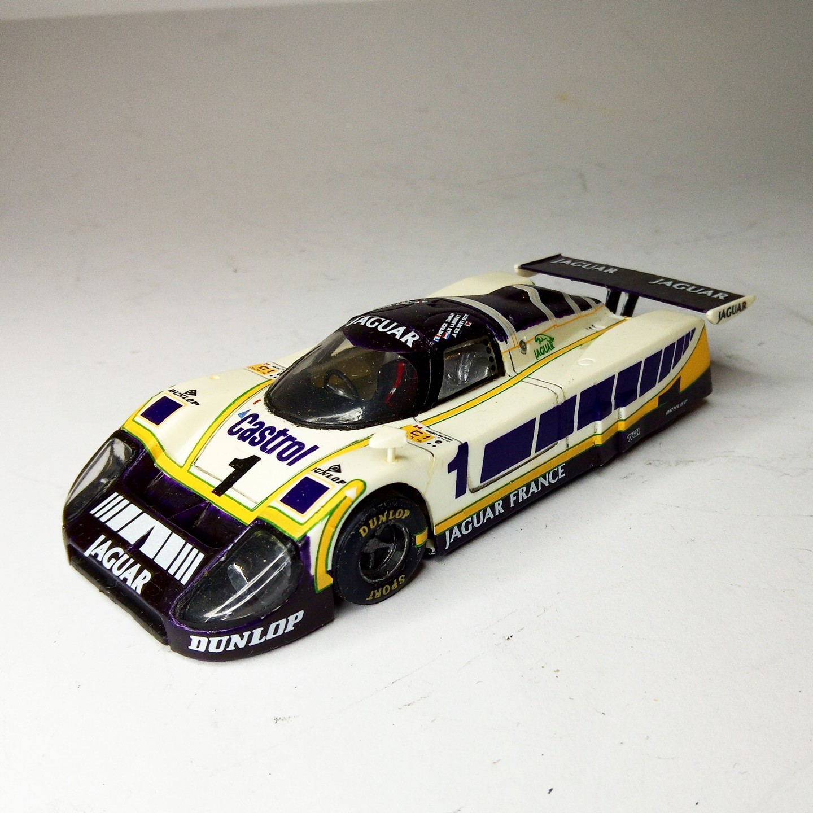
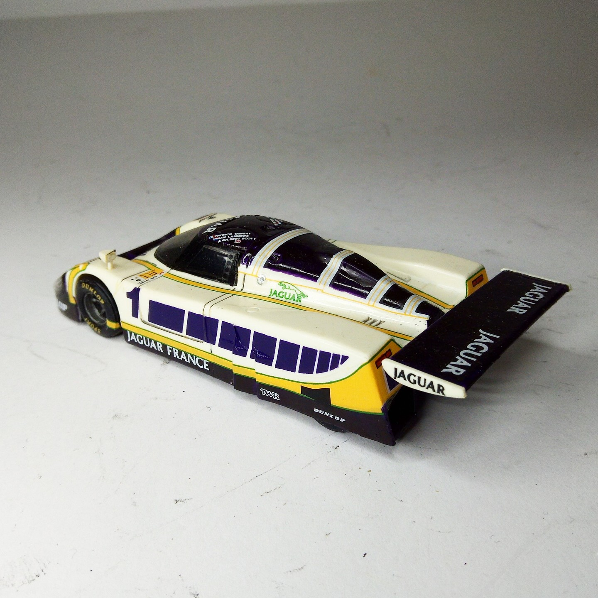

Auto e veicoli stradali · scale model archive
Jaguar XJR-9 LM
Jaguar XJR-9 LM — Kit: Heller, Scale: 1/43. Cute little model with beautifül livery #1/43 #Heller #Jaguar #XJR9

Photo gallery

English description
Cute little model with beautifül livery
#1/43 #Heller #Jaguar #XJR9
Descrizione italiana
Piccolo modello grazioso con una livrea bellissima.